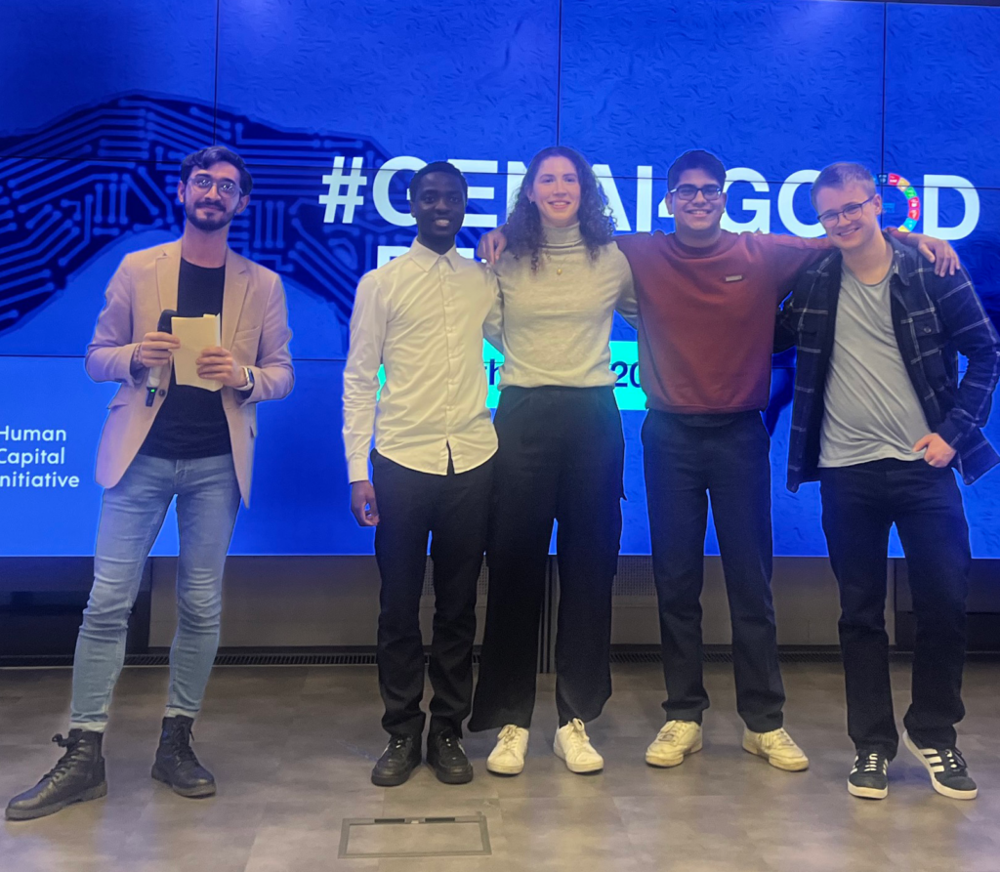

Gen AI 4 Good
Traffix.
Our first-year ISE team placed second at the Gen AI 4 Good Open Incubator with a tool for traffic planning.

From the demo day
We built Traffix for county councils assessing whether a proposed traffic route is feasible. My teammates presented it to the judges at Tangent’s demo day in Trinity College Dublin.